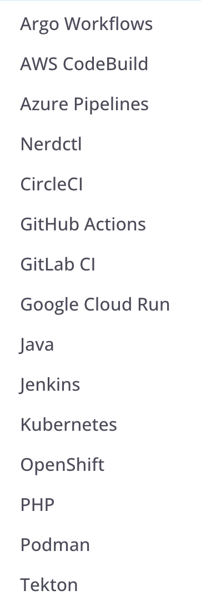

The common scenario
Disruptive experimentation
You have a pipeline, either new or existing, and when you make changes to it, you have to push the changes to your repository and wait for the pipeline to run (or run it manually).
This can be slow, but it can also be a problem if you are experimenting with changes in a pipeline that others depend on.
This is typically the case for pipelines on development branches.
Dagger benefits
There are two main reasons for adopting Dagger:
- Running pipelines locally. Meaning you can test most changes before pushing them to your repository. It allows for code to be reused.
- Writing pipelines as code. Often we learn flavors of YAML or other schemas, but Dagger allows you to write pipelines in languages many of us are familiar with.
Agentic workflow automation
Dagger supports encapsuling agents into Dagger workflows, which can be run locally or in the cloud, and made reproducible. This could be agents using tools to perform tasks, or agents using other agents to perform tasks.
We will not cover this in the course as it is a separate topic.
Supported languages
Dagger currently offers SDKs for the following languages:
- Go
- Python
- TypeScript
- GraphQL
- PHP
For a list of supported SDKs and latest links, see the Dagger documentation, API and SDKs.
Supported operating systems
Dagger runs on the following platforms:
- MacOS
- Linux
- Windows
Supported platforms
